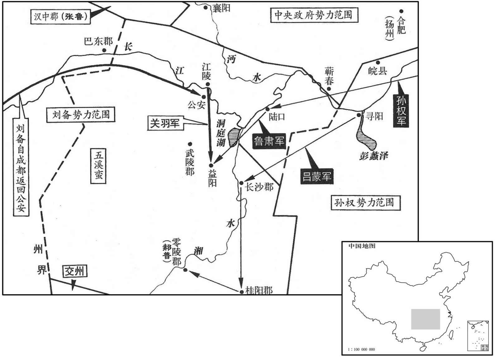
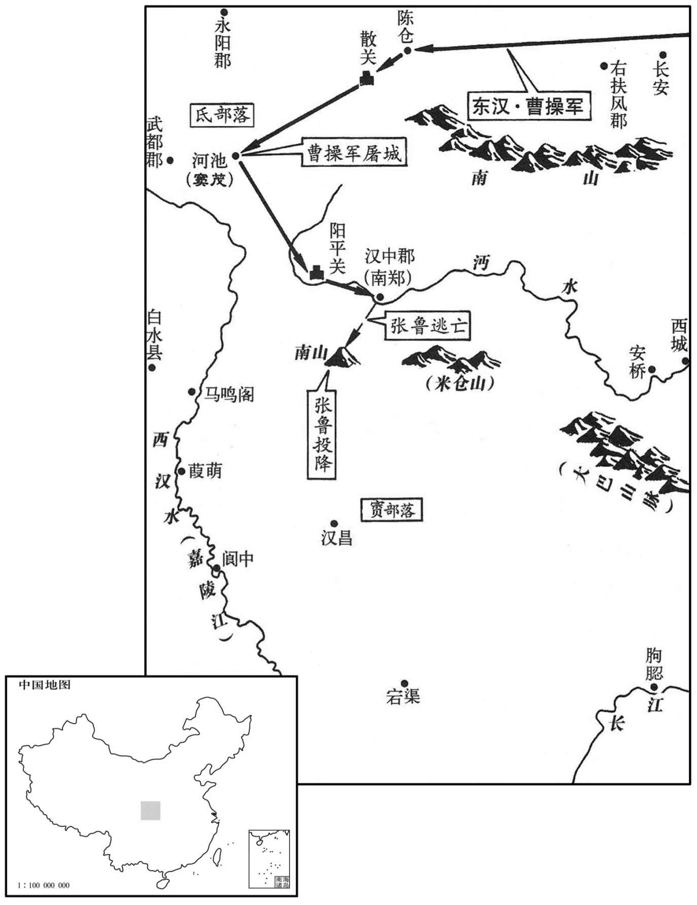
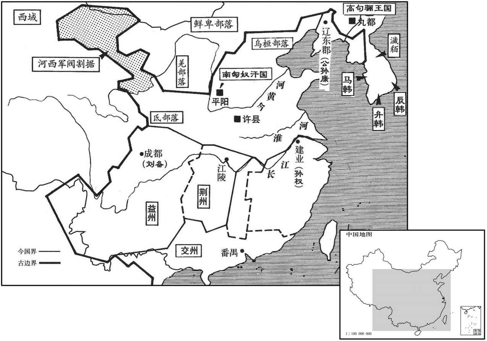

公元215年资治通鉴：本年记事、原文与白话对照
按原书编年位置阅读；追叙和史论不等于本年发生的事件。白话采用所据译本，缺译不以生成译文补齐。
卷67 · 本年记事
公元215年 · 汉孝献皇帝建安二十年
二十年〔（乙未、二一五）〕
上传原文的注释括号有异常，字符原样保留；无法可靠划分的段落默认全文显示。
本年事件索引（现代整理）
- 曹操之女曹氏立为皇后
- 曹操攻取武都，击败氐人并受降韩遂部众
- 刘备拒绝孙权索取益州，共谋取蜀的计划破裂
- 孙权索回荆州三郡，刘备与其争夺
- 吕蒙劝降零陵太守郝普，随即驰援益阳
- 鲁肃与关羽会谈，孙刘以湘水划分荆州
- 曹操进攻汉中，张鲁弟张卫据关抵抗
- 张鲁采纳阎圃建议退保巴中，封藏仓库后请降
- 司马懿、刘晔劝曹操乘胜取蜀，曹操决定撤军
- 张辽夜袭合肥，率少数精兵冲入孙权大营
- 张辽追击孙权于逍遥津，凌统护权突围
- 贺齐当面劝孙权谨慎临险，孙权承诺引以为戒
- 巴夷首领朴胡、杜濩、任约归附曹操
- 魏国设置名号侯，以虚封奖赏军功
- 张鲁率家属投降，曹操以客礼相待并封侯
- 习凿齿称曹操封赏阎圃体现赏罚之本
- 程银、侯选等随张鲁归降，复任官爵
- 刘备令张飞击败张郃，收复巴西等地
- 赵俨安抚关中叛军，保全并调遣两万余人

本年形势与背景参考图

本年形势与背景参考图

本年形势与背景参考图
春，正月，甲子，立贵人曹氏为皇后；魏公操之女张：「女」上脱「中」字。】〕也。
两版字句有差异，建议核对原文。
春季，正月，甲子（十八日），魏公曹操的女儿曹贵人被册立为皇后。
三月，魏公操自将击张鲁，将自武都入氐，〔武都，本白马氐所居之地，武帝开以为郡。〕氐人塞道，〔塞，悉则翻。〕遣张合、朱灵等攻破之。〔合，古合翻，又曷合翻。余据大散关在今凤州梁泉县。氐王窦茂众万余人，恃险不服，五月，攻屠之。西平、金城诸将曲演、蒋石等共斩送韩遂首。〔汉末分金城为西平郡。〕
本段缺少可靠对应白话，原文完整保留；未使用生成译文。
初，刘备在荆州，周瑜、甘宁等数劝孙权取蜀。〔数，所角翻。〕权遣使谓备曰：〔使，疏吏翻。〕「刘璋不武，不能自守，若使曹操得蜀，则荆州危矣。今欲先攻取璋，次取张鲁，一统南方，虽有十操，无所忧也。」备报曰：「益州民富地险，刘璋虽弱，足以自守。今暴师于蜀、汉，转运于万里，欲使战克攻取，举不失利，此孙、吴所难也。〔孙、吴，谓孙武、吴起也。〕议者见曹操失利于赤壁，谓其力屈，无复远今；〔复，扶又翻。〕今操三分天下已有其二，将欲饮马于沧海，观兵于吴会，〔吴会，谓吴地为一都会。会，读如字。一说，吴、会，谓吴、会稽二郡之地。会，音工外翻。〕何肯守此坐须老乎！而同盟无故自相攻伐，借枢于操，〔枢者，门户所由以运动也。言操欲摇动吴、蜀而未得其枢，若自相攻伐，是借之以可动之枢也。〕使敌乘其隙，非长计也。且备与璋托为宗室，冀凭威灵以匡汉朝。〔朝，直遥翻。〕今璋得罪于左右，备独悚惧，非所敢闻，愿加宽贷。」权不听，遣孙瑜率水军住夏口。备不听军过，谓瑜曰：「汝欲取蜀，吾当被发入山，不失信于天下也。」〔言宗室被攻而不能救，无面目以立于天下也。被，皮义翻。〕使关羽屯江陵，张飞屯秭归，〔秭归县，属南郡，唐之归州。〕诸葛亮据南郡，〔南郡，本治江陵，吴得荆州，置南郡于江南；晋平吴，以江陵为南郡，以江南之南郡为南平郡。亮所据盖江南之南郡也。〕备自住孱陵，〔孱，应劭音践；师古士连翻。〕权不得已召瑜还。及备西攻刘璋，权曰：「猾虏，乃敢挟诈如！」备留关羽守江陵，鲁肃与羽邻界；羽数生疑贰，肃常以欢好抚之。〔数，所角翻。好，呼到翻。〕
以前，刘备在荆州时，周瑜、甘宁等人多次劝孙权夺取蜀地。孙权派遣使者对刘备说：“刘璋软弱，不能保护自己，假如曹操得到蜀地，荆州就危险了。我现在计划先攻破刘璋，再击败张鲁，统一南方，即使有十个瑛操，我也没有什么可担忧的了。”刘备回答说：“益州人民富裕，地势险要，刘璋虽然软弱，保护自己还有足够的力量。现在若使军队行进在蜀、汉之地，餐风宿露，在万里道路上转运给养，要想战必克，攻必取，举措不失利，就是孙武和吴起也难以做到。议论的人见曹操在赤壁失败，就说他已经没有什么力量，不再有长远打算。然而现今三分天下曹操已拥有其二，准备到沧海去饮马，到吴郡会稽来阅兵，怎么会守着这个局面坐等年老呢？而抗曹的同盟之间却无故自相攻伐，把机会借给曹操，让敌人钻空子，这水是长久之计。况且我和刘璋都是刘姓皇族，希望凭借祖上尊严的神灵匡扶汉朝。如今刘璋得罪了您，我独自感到惶恐，不敢听从您的计划，请求宽恕。”孙权不听刘备的劝告，派孙瑜率水军驻在夏口。刘备不允许孙权的军队过境，对孙瑜说：“你们若要攻取蜀地，我将披头散发，隐遁山林之中，不能在天下人面前失信。”便派关羽驻守江陵，张飞屯兵在秭归，诸葛亮据守南郡，他自己坐镇孱陵。孙权不得已，把孙瑜召回。及至刘备向西进攻刘璋时，孙权说：“这个滑头，竟敢如此搞阴谋诡计！”刘备留下关羽防守江陵，鲁肃的防区与关羽为邻；关羽多次产生疑虑，鲁肃则经常以友好的态度使他安心。
及备已得益州，权令中司马诸葛瑾从备求荆州诸郡。〔时权署置诸将有别部司马；则中司马者，盖中军司马也。瑾自长史转中司马，位任盖不轻矣。瑾，渠吝翻。〕备不许，曰：「吾方图凉州，凉州定，乃尽以荆州相与耳。」权曰：「此假而不反，乃欲以虚辞引岁也。」〔谓延引岁时也。孟子曰：久假而不归，焉知其非有也。〕遂置长沙、零陵、桂阳三郡长吏。〔长，知两翻。〕关羽尽逐之。权大怒，遣吕蒙督兵二万以取三郡。
刘备得到益州后，孙权派中司马诸葛瑾向刘备索求荆州的各郡。刘备不同意，说：“我正准备夺取凉州，取得凉州以后，才能把荆州全部给你们。”孙权说：“这是有借无还，不过是找借口以拖延时日罢了。”因此任命了长沙、零陵、桂阳三郡的地方长官。关羽则全部加以驱逐。孙权大怒，派吕蒙率兵二万人夺取三郡。
蒙移书长沙、桂阳，皆望风归服，惟零陵太守郝普城守不降。〔降，户江翻；下同。〕刘备闻之，自蜀亲至公安，遣关羽争三郡。孙权进住陆口，为诸军节度；使鱼肃将万人屯益阳以拒羽；〔益阳县属长沙郡。应劭曰：在益水之阳。舆堪志：今潭州安化县，本汉益阳县。杜佑曰：潭州益阳县，汉故城在今县东。宋白曰：益阳故城在今益阳县东八十里，其城鲁肃所筑。〕飞书召吕蒙，使舍零陵急还助肃。蒙得书，秘之，夜，召诸将授以方略；晨，当攻零陵，顾谓郝普故人南阳邓玄之曰：「郝子太闻世间有忠义事，亦欲为之，而不知时也。〔郝普，字子太。郝，呼各翻。〕今左将军在汉中为夏侯渊所围，关羽在南郡，至尊身自临之。彼方首尾倒县，〔县，读曰悬。〕救死不给，岂有余力复营此哉！今吾计力度虑而以攻此，〔复，扶又翻。度，徒洛翻；下同。〕曾不移日而城必破，城破之后，身死，何益于事，而令百岁老母戴白受诛，岂不痛哉！度此家不得外问，〔此家，谓郝普也。〕谓援可恃，故至于此耳。君可见之，为陈祸福。」〔为，于伪翻。〕玄之见普，具宣蒙意；普惧而出降。蒙迎，执其手与俱下船，语毕，出书示之，因拊手大笑。普见书，知备在公安而羽在益阳，凓恨入地。蒙留孙河，委以后事，〔考异曰：按孙河已死，或他人同姓名耳。〕即日引军赴益阳。
吕蒙向长沙、桂阳发送文书，二郡都望风归服，只有零陵太守郝普据城坚守不降。刘备得到消息以后，亲自从蜀抵达公安，派关羽争夺三郡。孙权则亲至陆口坐镇，指挥调度各军；派鲁肃领兵一万人驻屯益阳，对抗关羽；用紧急军书传召吕蒙，让他放弃零陵去帮助鲁肃。吕蒙接到孙权的书面命令后，秘密藏了起来。夜间，召集部下将领，宣布了自己的作战方案；清晨，在向零陵发起攻击时，吕蒙看着郝普的旧友南阳人邓玄之说：“郝普听说世间有忠义之事，也想那样做，但他不了解时势。现在左将军刘备在汉中被夏侯渊包围，关羽则在南郡，我们主公亲自来征讨，他们好像首尾倒悬，救命都来不及，哪里有余力量再救援零陵！如今我已考虑周全，准备充分，将向零陵城发起攻击，不久必定可攻进城去，城破之后，郝普自己身死了，有什么益处，而且牵连百岁白发老母遭受诛杀，难道不让人痛心吗！我想郝普是得不到外边的消息，以为可以依靠援兵，所以坚守到现在。你应该去见他，为他分析祸福。”邓玄之见到郝普，把吕蒙的意思全都告诉他。郝普被吓住了，出城投降。吕蒙亲自迎接，拉着他的手一起下船，谈话后，吕蒙把孙权的军书命令拿来给他看，拍手大笑。郝普看到军书命令，才知道刘备已到公安，而关羽在益阳，惭愧悔恨得要钻到地底下。吕蒙留下孙河，命令他处理零陵的事务，当天率军奔赴益阳。
鲁肃欲与关羽会语，诸将疑恐有变，议不可往。肃曰：「今日之事，宜相开譬。刘备负国，是非未决，羽亦何敢重欲干命！」乃邀羽相见，各驻兵马步上，但诸将军单刀俱会。肃因责数羽以不返三郡，〔数，所具翻。〕羽曰：「乌林之役，左将军身在行间，戮力破敌，〔即谓赤壁之战也。行，户刚翻。〕岂得徒劳，无一块土，而足下来欲收地邪！」〔块，苦溃翻。〕肃曰：「不然。始与豫州觐于长阪，〔事并见六十五卷十三年。〕豫州之众不当一校，〔校，户教翻。〕计穷虑极，志势摧弱，图欲远窜，〔谓欲投吴巨也。〕望不及此。主上矜愍豫州之身无有处所，不爱土地士民之力，使有所庇荫以济其患；而豫州私独饰情，愆德堕好。〔私独，谓私其一己之所独也。堕，读曰隳。好，呼到翻；下同。〕今已藉手于西州矣，〔谓得益州，有以藉手也。〕又欲翦并荆州之土，斯盖凡夫所不忍行，而况整领人物之主乎！」羽无以答。会闻魏公操将攻汉中，〔考异曰：备传云「曹公定汉中，即引兵还耳。〕刘备惧失益州，使使求和于权。权令诸葛瑾报命，更寻盟好。遂分荆州，以湘水为界：长沙、江夏、桂阳以东属权，南郡、零陵、武陵以西属备。〔班志，湘水出零陵阳海山，至酃入江，过郡二，行二千五百三十里。吴、蜀分荆州，长沙、桂阳、零陵、武陵以湘水为界耳；南郡、江夏各自依其郡界。夏，户雅翻。〕诸葛瑾每奉使至蜀，〔使，疏吏翻。〕与其弟亮但公会相见，退无私面。
鲁肃准备与关羽会谈，将领们恐怕发生变故，劝鲁肃不要去。鲁肃说：“事到如今，最好的办法是开导、劝说。刘备忘恩负义，是非还没有最后的结论，关羽又如何敢再打算谋害我的性命！”于是，邀请关羽会面，各自在百步以外止住自己的部队，只有又方的将领带佩刀相见。鲁肃责备关羽不返还三郡，关羽说：“乌林那次战役，刘左将军直接参战，竭尽全力打败了敌人，难道能白白辛苦，不拥有一块土地？而您要来收取土地了吗！”鲁肃说：“不对！开始在长阪与刘备会面时，他的部众抵挡不了一校的人马，智竭计穷，士气低落，势力衰颓，打算远逃，那时想不到会有今天。我们主公可怜刘备无处守身，不吝惜土地和百姓的劳役，使刘备有了落脚之地，帮助他解决了困难。而刘备却自私自利，虚情假意，辜铡恩德，损坏我们的友好关系。现在他已得到益州，有了力量，又要兼并荆州土地，这样的事连普通人都不忍心做，何况领导一邦的领袖人物！”关羽无话可答。正这时，有人说魏公曹操将要攻打汉中，刘备恐怕失去益州，派使者向孙权求和。孙权命令诸葛瑾答复刘备，愿再度和好。于是双方以湘水为界，分割了荆州：长沙、江夏、桂阳以东归属孙权，南郡、零陵、武陵以西归属刘备。诸葛瑾每次作为使者到蜀，和他的弟弟诸葛亮只在公务会议上相见，退下后并不私相会面。
秋，七月，魏公操至阳平。〔水经注：浕水发武都氐中，南径张鲁城东。城因崤岭，周回五里；东临峻谷，杳然百寻；西、北二面，连峰接崖，莫究其极；从南为盘道，登陟二里有余。庾仲雍谓山为白马塞，东对白马城，一名阳平关。浕水南流入沔，谓之浕口。或曰：阳平关，即今兴元百牢关是也。杜佑曰：阳平关，在汉中褒城县西北。〕张鲁欲举汉中降，〔降，户江翻；下同。〕其弟卫不肯，率众数万人拒关坚守，横山筑城十余里。初，操承凉州从事及武都降人之辞，说「张鲁易攻，〔易，以豉翻。〕阳平城下南北山相远，〔远，于愿翻。〕不可守也」，信以为然。及往临履，不如所闻，乃叹曰；「他人商度，〔度，徒洛翻。〕少如人意。」〔少，诗沼翻。〕攻阳平山上诸屯，山峻难登，既不时拔，士卒伤夷者多，军食且尽，操意沮，便欲拔军截山而还，〔沮，在吕翻。截山者，防其追尾也。还，从宣翻，又如字；下同。〕遣大将军夏侯惇、将军许褚呼山上兵还。会前军夜迷惑，误入张卫别营，营中大惊退散。侍中毗、主簿刘晔等在兵后，语惇、褚，〔语，牛倨翻。〕言「官兵已据得贼要屯，贼已散走」，犹不信之。惇前自见，乃还白操，进兵攻卫，卫等夜遁。〔考异曰：武帝纪曰：「公至阳平，张鲁使弟卫等据关，攻之不拔，乃引还。贼守备解散，公乃密遣解剰等乘险夜袭，大破之。」刘晔传曰：「太祖欲还，令晔督后诸军。晔策鲁可克，驰白太祖，不如致攻，遂进兵，鲁乃奔走。」郭颁世语：「鲁遣五官掾降，弟卫拒王师不得进。鲁走巴中。军粮尽，太祖将还。西曹掾郭谌曰：『鲁已降，留使既未反，卫虽不同，作携可攻。县军深入以进必克，退必不免。』太祖疑之。夜有野麋数千，突坏卫营，军大惊，高祚等误与卫众遇，卫以为大军见掩，遂降。」魏名臣奏载杨暨表曰：「武皇帝征张鲁，以十万之众，身亲临履。张卫之守，盖不足言。地险守易，虽有精兵虎将，势不能施。对兵三日，欲抽军还。天祚大魏，鲁守自坏，因以定之。」又载董昭表。其「承凉州」以下，皆昭表所述，必得实。今从之。
本段缺少可靠对应白话，原文完整保留；未使用生成译文。
张鲁闻阳平已陷，欲降，阎圃曰：「今以迫往，功必轻；不如依杜濩赴朴胡，〔杜濩，賨邑侯也。朴胡，巴七姓夷王也。余据板楯蛮渠帅有罗、朴、督、鄂、度、夕、龚七姓，不输租赋，此所谓七姓夷王也。其余户岁入賨钱，口四十，故有賨侯。孙盛曰：朴，音浮；濩，音户。〕与相拒，然后委质，〔质，如字。〕功必多。」乃奔南山人巴中。〔今兴元府，古汉中之地也。兴元之南有大行路，通于巴州。其路险峻，三日而达于山顶。其绝高处谓之「孤云、两角，去天一握。」孤云、两角，二山名也；今巴州汉巴郡宕渠县之北界也。三巴之地，此居其中，谓之中巴。巴之北境有米仓山，下视兴元，实孔道也。〕左右欲悉烧宝货仓库，鲁曰：「本欲归命国家，而意未得达。今之走避锐锋，非有恶意。宝货仓库，国家之有。」遂封藏而去。操入南郑，〔南郑县，汉中郡治所。〕甚嘉之，又以鲁本有善意，遣人忍喻之。
张鲁听说阳平已被曹军攻陷，要投降。阎圃说：“现在因为受到曹军压力而被迫投降，一定没有什么功；不如通过杜投奔朴胡，一同抗拒曹军，然后再归顺，功一定大。”于是逃奔南山进入巴中。张鲁部下要烧毁全部宝物和仓库，张鲁说：“本来我们准备归顺国家，而这样的意愿还没有转达上去。如今离开这里，只是为了躲避大军的锋锐，并没有恶意。宝物仓库，本是国家所有。”于是，把府库封存好以后，张鲁等人才离去。曹操进入南郑，对张鲁的作法非常赞赏。又因为张鲁原本有善意，派人前往安慰晓谕。
丞相主簿司马懿言于操曰：「刘备以诈力虏刘璋，蜀人未附，而远争江陵，此机不可失也。今克汉中，益州震动，进兵临之，势必瓦解。圣人不能违时，亦不可失时也。」操曰：「人苦无足，既得陇，复望蜀邪！」〔光武诏岑彭等曰：「人苦不知足，既得陇，复望蜀。」〕刘晔曰：「刘备，人杰也，有度而迟；得蜀日浅，蜀人未恃也。今破汉中，蜀人震恐，其势自倾。以公之神明，因其倾而压之，无不克也。若少缓之，诸葛亮明于治国而为相，关羽、张飞勇冠三军而为将，〔少，诗沼翻。治，直之翻。相，息亮翻。冠，古玩翻。将，即亮翻；下同。〕蜀民既定，据险守要，则不可犯矣。今不取，必为后忧。」操不从。居七日，蜀降者说「蜀中一日数十惊，守将虽斩之而不能安也。」〔考异曰：刘晔传云「备虽斩之」，按备传云：「备下公安，闻曹公定汉中，乃还。」如此，则备时犹在公安也。〕操问晔曰：「今尚可击不﹖」〔不，读曰否。〕晔曰：「今已小定，未可击也。」〔七日之间，何以遽谓之小定﹖晔盖窥觇备之守蜀有不可犯者，故为此言以对操焉耳。〕乃还。以夏侯渊为都护将军，〔都护将军，以尽护诸将而立号；光武始以命贾复。〕督合、徐晃等守汉中；以丞相长史杜袭为驸马都尉，留督汉中事。袭绥怀开导，百姓自乐出徙洛、邺者八万余口。〔乐，音洛。〕
丞相主簿司马懿向曹操建议：“刘备靠奸诈动持了刘璋，蜀人还没有归附他，他却去远行争夺江陵，这是个不能失去的好机会。现在，我们攻克了汉中，益州受到震动，此时进兵攻击，势必土崩瓦解。圣人不能违背天时，也不能错过良机。”曹操说：“人都是苦于不知足，既得到陇地，又眼望着蜀地吗！”刘晔说：“刘备，是人中豪杰，做事有章法，但是缓慢；取得蜀地时间不长，还不能依靠蜀人。我们刚刚攻取汉中，蜀地之人受到很大震动，非常恐慌，势将自行崩溃。以主公的英明，趁其崩溃时率兵压境，一定能取胜。如果稍有迟缓，诸葛亮擅长治国而为相，关羽、张飞勇冠三军而为将，蜀地人民安定以后，据守险要之处，我们就很难进攻了。现在不去攻取，必将成为我们的后患。”曹操没有听从这些建议。七天后，蜀地来降的人说：“蜀中一天发生数十次惊忧，守将虽然以斩杀来弹压，仍然安定不下来。”曹操问刘晔：“现在还能进攻吗？”刘晔回答：“现在蜀地已初步安定，不能再进攻。”于是撤军。任命夏侯渊为都护将军，率领张、徐晃等人守卫汉中；任命丞相长史杜袭为附马都尉，留下掌管汉中的事务。杜袭采取怀柔政策进行开导，汉中的百姓自愿出来迁徙到洛、邺两地的有八万余人。
八月，孙权率众十万围合肥。时张辽、李典、乐进将七千余人屯合肥；魏公操之征张鲁也，为教与合肥护军薛悌，署函边曰：「贼至，乃发。」及权至，发教，教曰：「若孙权至者，张、李将军出战，乐将军守，护军勿得与战。」〔操以辽、典勇锐，使之战；乐进持重，使之守；薛悌文吏也，使勿得与战。〕诸将以众寡不敌，疑之。张辽曰：「公远征在外，比救至，彼破我心矣。〔比，必寐翻。〕是以指及其未合逆击之，折其盛势，以安众心，然后可守也。」进等莫对。辽怒曰：「成败之机，在此一战。诸君若疑，辽将独决之。」〔欲独出战也。〕李典素与辽不睦，慨然曰：「此国家大事，顾君计何如耳，吾可以私憾而忘公义乎！请从君而出。」于是辽夜募敢从士，得八百人，椎牛犒飨。〔犒，苦到翻。〕明旦，辽被甲持戟，先登陷陈，杀数十人，斩二大将，大呼自名，〔陈，读曰阵。呼，火故翻。〕冲垒入至权麾下。权大惊，不知所为，走登高冢，以长戟自守。辽叱权下战，权不敢动，望见辽所将众少，乃聚围辽数重。〔少，诗沼翻。重，直龙翻。〕辽急击围开，将麾下数十人得出。余众号呼曰：「将军弃我乎﹖」〔号，户高翻。〕辽复前〔【章：甲十一行本「前」作「还」；乙十一行本同；退斋校同。】〕突围，拔出余众。〔复，扶又翻；下同。〕权人马皆披靡，无敢当者。〔披，普靡翻。〕自旦战至日中，吴人夺气。乃还修守备，众心遂安。
八月，孙权率军队十万人围攻合肥。此时，张辽、李典、乐进率七千人在合肥驻守。魏公曹操去征讨张鲁，留一份指令给合肥护军薛悌，在指令的封套边上写道：“敌人来了，再找开看。”及至孙权到来，薛悌等人打开指令，指令中写道：“假若孙权到来，张、李将军出战迎敌，乐将军守城，护军不要参战。：将军们认为寡不敌众，对曹操的指示有怀疑。张辽说：“魏公远征张鲁，等他派救兵到达，敌人必定已将我们攻破了。所以他指示趁敌人未集结时予以迎头抗击，以摧折敌军锋芒，安定我军军心，然后才可能拒守。”乐进等人都不发言。张辽气愤地说：“胜负的关键，在此一战。诸位若还有疑问，我张辽将独自出战，以决胜负。”李典原本与张辽不和，却感慨地说：“这是国家大事，只是看您的计谋将会怎样罢了，我怎么能因为私人的恩怨而损害公义呢！我请求和您一起出战。”于是，张辽当夜募集敢于自己出战的兵士八百人，杀牛设宴隆重犒赏他们。第二天清晨，张辽身穿铠甲，手持战戟，身先士卒，冲锋陷阵，杀死数十人，斩敌两员大将，高喊“我是张辽”，冲破敌兵营垒，直到孙权的大旗下。孙权大惊，不知所措，退上一座高丘，用长戟抵御。张大声叫喊着，要孙权下来交战，孙权不敢动，看到张辽所带的人马并不多，乃下令将张辽重重包围。张辽急忙打开重围，带领部下数十人冲出来。其余的人高喊：“将军要抛弃我们吗？”张辽又返身杀回，再度突围，救出其余的战士。孙权的人马都望风披靡，不敢抵挡。从清晨一直战到中午，东吴的士兵丧失了斗志。张辽这才命令回城，部署守城，整修城防，人心军心于是安定。
权守合肥十余日，城不可拔，彻军还。兵皆就路，权与诸将在逍遥津北，〔水经注：合肥东有逍遥津，水上旧有梁。〕张辽觇望知之，〔觇，丑廉翻，又丑艳翻。〕即将步骑奄至。甘宁与吕蒙等力战扞敌，凌统率亲近扶权出围，复还与辽战，左右尽死，身亦被创，度权已免，乃还，〔被，皮义翻。创，初良翻。度，徒洛翻。〕权乘骏马上津桥，〔上，时掌翻。〕桥南已彻，丈余无板；亲近监谷利在马后，〔亲近监，官也。谷，姓也；利，名也。江表传曰：谷利者，本左右给使也，以詌直为亲近监。〕使权持鞍缓控，〔控，即马鞚。利于后着鞭以助马势，〔着，陟略翻。〕遂得超渡。贺齐率三千人在津南迎权，权由是得免。
孙权包围合肥十多天，无法攻陷，便撤军返回。十兵们已经上路，孙权和部下将领们在逍遥津北岸，张辽从远处看到后，便率领步、骑兵突然杀到。甘宁与吕蒙等人奋力抵御，凌统率领亲兵扶孙权冲出包围，又杀进去与张辽奋战，身边的战士全部战死了，他自己也受了伤，佑计孙权已无危险，他才退回去。孙权乘骏马来到逍遥津桥上，桥南部的桥板已撤去，有一丈多宽没有桥板。亲近监谷利在孙权马后，要孙权抓住马鞍，放松缰绳，他在后面猛烈用鞭抽马，加强马的冲势，于是飞跃过去。贺齐率三千人在逍遥津南岸迎接，孙权因此得免于难。
权入大船宴饮，贺齐下席涕泣曰：「至尊人主，常当持重，今日之事，几致祸败。群下震怖，〔几居布翻。怖，普布翻。〕若无天地，愿以此为终身之诫！」权自前收其泪曰：「大凓，〔权凓谢贺齐也。〕谨已刻心，非但书绅也。」〔论语，子张问于孔子，以孔子之言书诸绅。故以答贺齐。
两版字句有差异，建议核对原文。
孙权登上大船，在船舱设宴饮酒，贺齐从席间走出，哭着说：“主公无比尊贵，应处处小心谨慎，今天的事情，几乎造成巨大灾难。我们这些部属都非常惊恐，如同天塌地陷，希望您终身记住这一教训！”孙权亲自上前为贺齐擦去眼泪说：“很惭愧，我把这次教训铭刻在心中，不仅仅写在束身的大带上。”
九月，巴、賨夷帅朴胡、杜濩、任约，各举其众来附。〔賨，臧宗翻。帅，所类翻。〕于是分巴郡，以胡为巴东太守，濩为巴西太守，约为巴郡太守，皆封列侯。〔后三人皆为刘备所破。
两版字句有差异，建议核对原文。
九月，巴、夷两个少数部族首领朴胡、杜、任约，各率全体部众归附朝廷。于是朝廷划分巴郡，以朴胡为巴东太守，杜为巴西太守，任约为巴郡太守，三人都被封为列侯。
冬，十月，始置名号侯以赏军功。〔魏书曰：置名号爵十八级，关中侯爵十七级，皆金印、紫绶。又置关内外候十六级，铜印、龟纽、墨绶。皆不食租。裴松之曰：今之虚封，盖自此始。
本段缺少可靠对应白话，原文完整保留；未使用生成译文。
十一月，张鲁将家属出降。〔降，户江翻；下同。〕魏公操逆拜鲁镇南将军，待以客礼，封阆中侯，〔贤曰：阆中县，属巴郡，今隆州。余据隆州后避唐玄宗讳改为阆州。杜佑曰：阆中，今阆州城。阆，音浪。〕邑万户。封鲁五子及阎圃等皆为列侯。
十一月，张鲁率领家属出来投降。魏公曹操亲迎，授予张鲁镇南将军的官职，按照宾客的礼节接待他，封他为阆中侯，食邑万户。同时，封张鲁的五个儿子，以及阎圃等人为列侯。
习凿齿论曰：「阎圃谏鲁勿王，〔事见六十四卷建安六年。〕而曹公追封之，将来之人，孰不思顺！塞其本源而末流自止，〔塞，悉则翻。〕其此之谓欤！若乃不明于此而重焦烂之功，〔此引前书徐福焦头烂额事，见二十五卷汉宣帝地节四年。〕丰爵厚赏止于死战之士，则民利于有乱，俗竞于杀伐，阻兵杖力，〔杖，除两翻。〕干戈不戢矣。曹公之此封，可谓知赏罚之本矣。
习凿齿论曰：“阎圃劝谏张鲁不要称王，而曹操却追封他，以后的人，哪有不愿归顺曹操的！堵塞水的源头，其下游的水自然不再流动，说的不正是这个道理吗！假如不明白这一点，仅重视武力征伐的作用，丰厚的爵位和赏赐只给那些拼死作战的武士，民众百姓便会认为动乱有利可图，习惯于争相攻杀，倚仗武力，战乱就不会停止了。曹操这样封赏，可以说是了解赏罚的根本原则。
程银、侯选、庞岿皆随鲁降。〔程银、侯选，关中部帅也；庞岿，马超将也：渭南、冀城之败，皆奔张鲁。岿，古德字。〕魏公操复银、选官爵，拜岿立义将军。
程银、侯选、庞德都随张鲁归降曹操。魏公曹操恢复了程银、侯选的官爵，授予庞德立义将军的职位。
张鲁之走巴中也，黄权言于刘备曰：「若失汉中，则三巴不振，此为割蜀之股臂也。」〔三巴，巴东、巴西、巴郡也。〕备乃以权为护军，率诸将迎鲁；鲁已降，权遂击朴胡、杜濩、任约，破之。魏公操使张合督诸军徇三巴，欲徙其民于汉中，进军宕渠。〔宕渠县，本属巴郡，时属巴西郡。贤曰：宕渠故城，在今渠州流江县东北。杜佑曰：俗号车骑城是也。宋白曰：宕渠城，汉车骑将军冯绲增修，俗名车骑城。师古曰：宕，音徒浪翻。〕刘备使巴西太守张飞与合相拒，五十余日，飞袭击合，大破之。合走还南郑，备亦还成都。
张鲁逃奔巴中时，黄权对刘备说：“如果失去汉中，则三巴将很难挽救，这等于割去了蜀的四肢。”刘备因此任命黄权为护军，率领兵将去迎接张鲁；因张鲁已归降了曹操，黄权便去攻打朴胡、杜、任约，获胜。魏公曹操派张统领军队占领三巴，企图把那里的民众迁徙到汉中，张率军向岩渠进发。刘备派遣巴西太守张飞抗拒张。五十多天后，张飞向张发动袭击，张大败，退回南郑。刘备也回到成都。
操徙出故韩遂、马超等兵五千余人，使平难将军殷署等督领，〔平难将军，曹氏所置。难，乃旦翻。〕以扶风太守赵俨为关中护军。操使俨发千二百兵助汉中守御，殷署督送之，行者不乐。〔乐，音洛。〕俨护送至斜谷口，〔斜，余遮翻。谷，音浴，又古禄翻。〕还，未至营，署军叛乱。俨自随步骑百五十人，皆叛者亲党也，闻之，各惊，被甲持兵，〔被，皮义翻。〕不复自安。〔复，扶又翻。〕俨徐喻以成败，慰励恳切，皆慷慨曰：「死生当随护军，不敢有二！」前到诸营，各召料简诸奸结叛者〔料，音聊，量度也，理也。〕八百余人，散在原野。俨下令：惟取其造谋魁率治之，〔率，读曰帅，所类翻。治，直之翻。〕余一不问；郡县所�为e皆放遣，乃即相率还降。俨密白：「宜遣将诣大营，〔大营，谓操营也。将，读如字，送也。〕请旧兵镇守关中。」魏公操遣将军刘柱将二千人往，当须到乃发遣。俄而事露，诸营大骇，不可安谕。〔不可以言语谕之使安帖也。〕俨遂宣言；「当差留新兵之温厚者千人，镇守关中，〔差，初皆翻，择也。〕其余悉遣东。」〔遣之东赴操营。〕便见主者内诸营兵名籍，立差别之。〔主者，主兵籍者也。差，初皆翻，择也，又初加翻，言以等差别异之也。别，彼列翻，分也，异也。〕留者意定，与俨同心，其当去者亦不敢动。俨一日尽遣上道，〔上，时掌翻。〕因使所留千人分布罗落之。〔分布于行者之间，罗列而遮落之也。〕东兵寻至，〔东兵，刘柱所将之兵也。〕乃复胁谕，〔复，扶又翻。〕并徙千人，令相及共东。凡所全致二万余口。
曹操分出原属于韩遂、马超的士卒五千余人，派平难将军殷署等人统领，又任命扶风太守赵俨为关中护军。曹操命令赵俨派兵一千二百加强汉中防务，由殷署监督送往汉中，将要被派往汉中的十兵很不情愿。赵俨送这些人到斜谷口后返回，尚到军营，殷署的部队发生叛乱。跟随赵俨的步、骑兵一百五十人，都是叛军的亲戚同党，他们听说叛乱以后，都很惊慌，穿戴好铠甲，手执兵器，惶惶不安。赵俨从容地对他们分析了成败得失，恳切地加以抚慰勉励，士兵们都慷慨地说：“不论生死，我们都会跟随护军，不敢有二心！”他们前往各营，分别召唤、鉴别那些结党叛乱者，共八百余人，分散在田野中。赵俨下令：只取那些谋划叛乱的首领进行惩治，其余的一概不追究。郡县将所逮捕的人全部释放，于是叛兵相继回来投降。赵俨秘密上报：“应当将这批人送到大营，请用旧部队来镇守关中。”魏公曹操派将军刘柱率两千人前往，约定等抵达后再发遣关中兵。不久事情泄露。各营非常惊恐，用劝导已不能使众人安定下来。赵俨于是宣布：“我将在你们当中挑选温和老实的一千人留下，镇守关中，其余的全都派往东方。”于是召见主管官员，命令呈上各营士兵名册，立刻进行择别。留下来的人情绪稳定，与赵俨同心，那些该走的人也不敢有所举动。赵俨在一天内将该走的人全部发遣上路，并将所留下的一千人分布到各处守置。不久，刘柱所率部队从东方赶到，赵俨于是再次威胁劝导，将留下的一千人也一并发遣，让他们跟在先前被发遣的部队后面，一同前往东方。总共安全送到东方二万余人。
译本中未与胡注本可靠对应的内容
以下另列供核对版本差异，不并入胡注本正文。
译本所附古文
[2]三月，魏公操自将击张鲁，将自武都入氐，氐人塞道，遣张、朱灵等攻破之。夏，四月，操自陈仓出散关至河池，氐王窦茂众万余人，恃险不服，五月，攻屠之。西平、金城诸将演、蒋石等共斩送韩遂首。
译本白话
三月，魏公曹操亲自率兵攻打张鲁，准备自武都进入氐人所居之地。氐人在途中拦截，曹操派张、朱灵打败了氐人。夏季，四月，曹操从陈仓出散关，到达河池。氐王窦茂有部众一万余人，仗恃地势险要，不肯降服。五月，曹军打败氐人，并进行屠杀。西平、金城的演、蒋石等将领共同杀死韩遂，把他的头颅献给曹操。
译本所附古文
[4]秋，七月，魏公操至阳平。张鲁欲举汉中降，其弟卫不肯，率众数万人拒关坚守，横山筑城十余里。初，操承凉州从事及武都降人之辞，说“张鲁易攻，阳平城下南北山相远，不可守也”，信以为然。及往临履，不如所闻，乃叹曰：“他人商度，少如人意。”攻阳平山上诸屯，山峻难登，既不时拨，士卒伤夷者多，军食且尽，操意沮，便欲拨军截山而还，遣大将军夏侯、将军许褚呼山上兵还。会前军夜迷惑，误入张卫别营，营中大惊退散。侍中辛毗、主簿刘晔等在兵后，语、褚，言“官兵已据得贼要屯，贼已散走”，犹不信之。前自见，乃还白操，进兵攻卫，卫等夜遁。
译本白话
秋季，七月，魏公曹操抵达阳平。张鲁准备以汉中为代价投降曹操，他的弟弟张卫不同意，率兵众数万人凭借关隘坚守，在山上横向筑城墙十余里。当初，曹操听了凉州从事及从武都投降过来的人所说的话：“张鲁容易被击败，阳平城外的南、北山相距很远，无法防守。”便相信了。等他亲自实地观察后，发现不像所听说的那样，因而感叹地说：“别人的揣度，很少能令人满意。”攻打阳平山守军时，山势险峻难登，不能及时攻取，士兵死伤很多，军粮也快用尽。曹操心情沮丧，便想让军队开拨，切断山道以后撤走，派大将军夏侯、将军许褚喊回山上的战士。恰巧，前部军队在夜间迷路，误入张卫下属军营，张卫的士兵大惊溃散。侍中辛毗、主簿刘晔等人跟在迷路士兵之后，便报告夏侯、许褚说：“我军已经占据了敌人的重要据点，敌人已经溃散。”夏侯等人还不信。夏侯亲眼目睹后，才回去报告了曹操，继续进兵攻打张卫，张卫等人乘夜逃走。
译本所附古文
[7]冬，十月，始置名号侯以赏军功。
译本白话
冬季，十月，开始设置只有名号的侯爵，奖赏那些有军功的人。